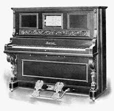

Piano de Cola-Tiene cuerdas horizontales y tapa superior que se abre.$13,000 MXPiano Vertical-Diseño compacto con cuerdas verticales.$13,900 MX

Pianola-Puede tocar automáticamente mediante rollos de papel perforados.$14,000 MXPiano Digital-Hace el sonido de un piano acústico usando tecnología.$10,OOO MXPiano Eléctrico-Produce sonido por medios electromecánicos.$3,000 MXPiano Silencioso-Es un piano acústico con opción de silencio.$900 MXPiano de Concierto-Usado en conciertos por su potencia y calidad sonora.$57,999 MX